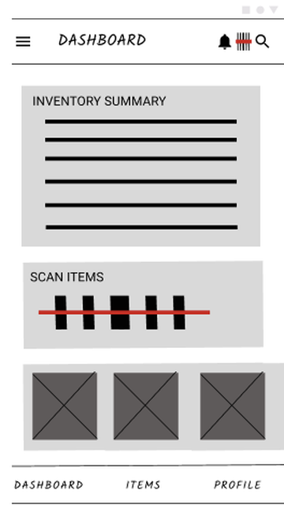
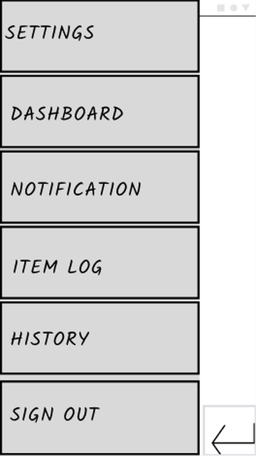
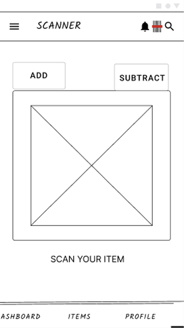
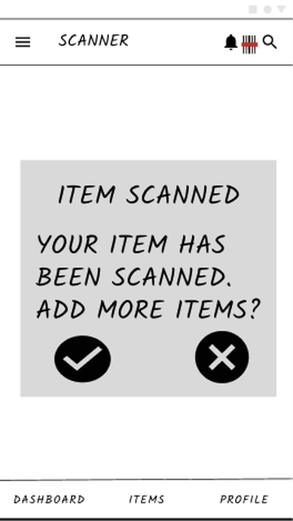
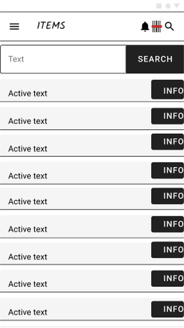
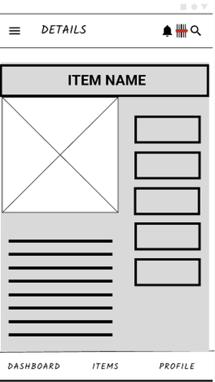
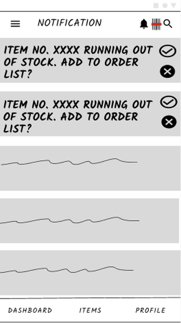
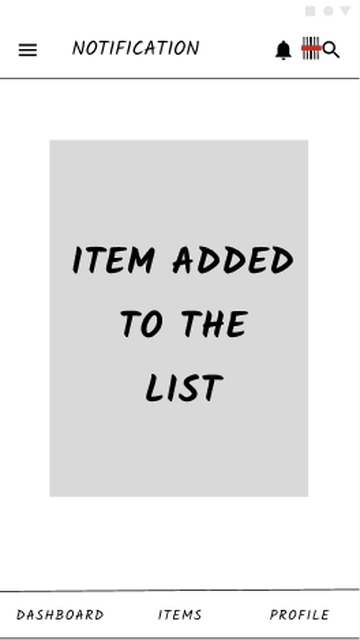

Inventory App
My first UX project: a mobile app that helps restaurant managers count and reorder stock, designed end to end for the Google UX Design Certificate.
Design thinking
- 1Empathize
Interviewed restaurant managers and owners about their daily counts and orders.
- 2Define
Three pain points: counting takes time, people forget, and most apps are built for warehouses.
- 3Ideate
Paper sketches of one core flow: open the app, scan an item, add or subtract stock.
- 4Prototype
Digital wireframes, a lo-fi prototype, then a hi-fi prototype in Figma.
- 5Test
Two rounds of in-person usability testing, one on each prototype.
“Even with a thorough list, we're human — we forget sometimes.”
Goal: keep stock flowing with no shortages and no scramble, in an app quick enough to use mid-shift.
Flow chart
- Open app
- Homelive stock counts
- Add / Subtract
- Scan item
- Confirm?no: rescan the item
- Stock updated
- Menu
- Items
- Item profile
- Menu
- Alerts
- Low stockadd to order list?
- Order list
Wireframe
Paper sketches became digital wireframes, then a clickable lo-fi prototype. The layout kept the scan button and add or subtract one tap from home.








User interface
The final design: calm purple with colour-coded stock tiles, a scanner with manual entry as a backup, and category lists that flag anything below its minimum level.


Usability testing: before and after
Users wanted a clearer flow with a back button, easier scanning and an organised item list.
Users wanted a tabulated item list, icons for quick access and more information on the home screen.


Design system
Colour
- Primary#876AD6
- In stock#E0FCE6
- Low stock#FFF6D9
- Out of stock#F9DCDC
- Vendors#EDE9F9
- Text#100101
Accessibility choices
- Icons plus labels
- Back button on every screen
- High-contrast text
- Item photos
- Colour-coded stock states
- One-tap scan
Outcome
A tested hi-fi prototype whose home screen answers the manager's first question, “what do I need to order?”, in one glance. As my first UX project, it taught me to design for how people actually work, not how a process looks on paper.
Part 2: Pints of Joy, the real build →